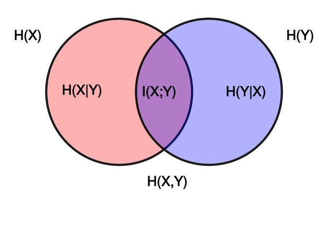

Random Vectors
Introduction
So far, we have moved in one dimension, from one random trial through the possible random events stemming from that trial to the random variable mapping probability distribution on the real-valued axis from those random events.
Now, we are going to extend this into multiple dimensions. A random vector is a measurable function that maps from the sample space of random events to the measurable space, now p-dimensional sets or intervals of real numbers.
Simply put, if one random event leads to p numbers, we are dealing with the random vector X and the realisation of this random vector x.
While random vectors can have \(p\in\mathbb{N}\) dimensions and can be either discrete, continuous or even a mix of the two, we will make things easier in this course by working only with 2-dimensional random vectors.
\[ \textbf{X}={X_1 \choose{X_2}}; \textbf{x}={x_1 \choose{x_2}} \]
Random vectors have distributions that can be described jointly, marginally or conditionally.
Joint distribution
The joint distribution of a random vector is described as an intersection. Translated, the joint cumulative distribution function for a two-dimensional random vector is
\[ F(x_1,x_2)=P(X_1\leq{x_1}\cap X_2\leq{x_2}) \]
joint probability funcion is
\[ P(x_1,x_2)=P(X_1={x_1}\cap X_2={x_2}) \]
and joint probability density function is
\[ f(x_1,x_2)=f(X_1={x_1}\cap X_2={x_2}) \]
We are omitting a case of a mixed random vector (continuous and discrete random variables in one random vector).
Relations between the mentioned descriptions of joint probability distributions are generalisations of the already seen relations in the random variables
\[ F(x_1,x_2)=\sum_{t=-\infty}^{x_1}\sum_{u=-\infty}^{x_2}P(x_1,x_2)\]
\[ F(x_1,x_2)=\int_{t=-\infty}^{x_1}\int_{u=-\infty}^{x_2}f(x_1,x_2)dx_2dx_1 \]
\[ f(x_1,x_2)=\frac{\partial\partial F(x_1,x_2)}{\partial x_1 \partial x_2} \]
Marginal distribution
Marginal distribution refers to any subset of the originating random vector independent of the omitted part of that random vector. Say we have a 5-dimensional random vector:
\[ \textbf{X}= \begin{pmatrix} X_1\\ X_2\\ X_3\\ X_4\\ X_5\\ \end{pmatrix} \]
Then, all the following random vectors and random variables can be called marginal vectors or variables (this is not a complete enumeration, just examples):
\[ \textbf{X}= \begin{pmatrix} X_1\\ X_2\\ X_3\\ X_4\\\end{pmatrix}, \textbf{X}= \begin{pmatrix} X_1\\ X_4 \end{pmatrix}, X_1 \]
Marginal distributions can be obtained from the joint distribution. Using the probability function, one needs to sum joint probabilities across the variables he is getting rid of.
The idea explained in two dimensions is this: You want, e.g. the probability P(X = 1); this probability is a union of all the joint probabilities containing X = 1, e.g. P(X1 = 1, X2 = 0), P(X1 = 1, X2 = 1), P(X1 = 1, X2 = 2). Because these intersections are disjoint random events, the union is calculated as a simple summation.
\[ P(x_1)=\sum_{x_2=-\infty}^\infty P(x_1, x_2) \]
The same logic applies to continuous random variables described by a probability density function but using continuous mathematics. i.e. integration
\[
f(x_1)=\int_{x_2=-\infty}^\infty f(x_1, x_2)dx_2
\]
Last but not least comes the relation between marginal and joint cumulative distribution function, which is straightforward
\[ F(x_1)= P(X_1 \leq x_1)=P(X_1 \leq x_1 \cap X_2 < \infty)= F(x_1,x_2=\infty) \]
Having marginal distributions of the random variables, all their characteristics can be calculated as usual. We will use marginal expected values and marginal variances for the characteristics of a random vector.
Joint characteristics
Joint characteristics, or just characteristics of a random vector, characterise specific properties of a random vector as a whole. Again, for the needs of this course, we simplify and use only the most common characteristics.
The location of a random vector is commonly characterised by a vector of expected values, which is a vector composed of marginal expected values of marginal random variables. In two dimensions:
\[ E(\textbf{X})= \begin{pmatrix} E(X_1)\\ E(X_2) \end{pmatrix} \]
A variance-covariance matrix commonly characterises the variability of a random vector. In this matrix, marginal variances are used together with covariances.
Covariance
Covariance is a measure of the linear relation between the two random variables. It can take any real value; if it is negative, the two random variables are negatively linearly associated; if it is positive, the two random variables are positively linearly associated; if it is zero, the two random variables are not linearly associated. The word linearly is important here - random variables can have non-linear associations, which can be visible using, e.g. regression or skedastic functions. Linearly can be viewed as on average. This will be discussed later in this chapter.
Mathematically, covariance is calculated from the definition
\[ cov(X_1,X_2)=E[(X_1-E(X_1))*(X_2-E(X_2))] \]
which can be transformed into the evaluation formula
\[ cov(X_1, X_2)=E(X_1X_2)-E(X_1)E(X_2) \]
To calculate covariance, one can calculate the expected value of the product of the two random variables and subtract the product of their expected values.
What if you wanted to calculate the covariance of the random variable with itself?
\[ cov(X_1,X_1)=E[(X_1-E(X_1))*(X_1-E(X_1))]=E(((X_1-E(X_1))^2 )=var(X_1)\]
or
\[ cov(X_1,X_1)=E(X_1X_1)-E(X_1)E(X_1)=E(X_1^2)-(E(X_1))^2=Var(X_1) \]
Variance is the specific case of the covariance; thus, the variance-covariance matrix describes all possible covariances.
The last important property of covariance is its symmetry; from the evaluation formula
\[ cov(X_1,X_2)=E(X_1X_2)-E(X_1)E(X_2)=E(X_2X_1)-E(X_2)E(X_1)=cov(X_2,X_1) \]
The variance-covariance matrix is thus square and symmetric, having marginal variances on the main diagonal. It is also positive semi-definite, an important property for various statistical techniques using sample variance-covariance matrices.
\[ \boldsymbol{\Sigma}= \begin{pmatrix} Var(X_1) & cov(X_1,X_2) \\ cov(X_2,X_1) & Var(X_2) \end{pmatrix} \]
Correlation
The covariance describes the direction of the linear association, but its value is unbounded and depends on the units of the random variables. Thus, we cannot compare values of the covariances across different pairs of random variables. Here comes the standardised version of the covariance that bounds its values to the range [-1; 1]. This standardised covariance is called correlation and is calculated as
\[ \rho(X_1,X_2)=\frac{cov(X_1,X_2)}{\sqrt{Var(X_1)*Var(X_2)}}=\frac{cov(X_1,X_2)}{S.D.(X_1)S.D.(X_2)} \]
The standardisation leads to a unitless value, which can be compared across different pairs of random variables. Value 0 still means a linearly independent pair of random variables; value -1 means that one random variable is a negative linear function of the other, and value 1 indicates that one random variable is a positive linear function of the other.
Most commonly, the correlation is somewhere in between. There are no hard bounds to a strong or weak association, even though you might find some simplifying tables with given bounds in various scientific fields. These tables are usually created by looking at the common correlations in the given field. For example, in social sciences, a correlation of 0.6 is typically referred to as strong simply because it is very unusually high value in the social sciences. On the other hand, in physics, a correlation of 0.6 would be considered weak because the correlation coefficients are typically higher than that in physics.
Correlation is also connected to the concept of explained variability in the linear regression analysis. This connection will be described in the chapter on two-dimensional normal distribution.
The correlation of the random variable with itself yields a value of 1
\[ \rho(X_1,X_1)=\frac{cov(X_1,X_1)}{\sqrt{Var(X_1)*Var(X_1)}}= \frac{Var(X_1)}{Var(X_1)}=1 \]
and the correlation is again symmetric:
\[ \rho(X_2,X_1)=\frac{cov(X_2,X_1)}{\sqrt{Var(X_2)*Var(X_1)}}=\frac{cov(X_1,X_2)}{\sqrt{Var(X_1)*Var(X_2)}}=\rho(X_1,X_2) \]
This together means that the correlation matrix is squared and symmetric, having values one on the main diagonal. This matrix is also a positive semidefinite
\[ \boldsymbol{\rho}= \begin{pmatrix} 1 & \rho(X_1, X_2) \\ \rho(X_2, X_1) & 1 \end{pmatrix} \]
To summarise, a random vector’s two main characteristics are a vector of expected values, which describes the location, and a variance-covariance matrix, which describes variability and linear relations inside the vector. The third commonly used characteristic is a correlation matrix, which recalculates a variance-covariance matrix to a standardised form, describing the linear relations inside the vector.
Conditional distribution
The joint distribution represents the intersection, and the marginal distribution represents the independent distribution so that the last distribution will represent the conditional distribution. The notation is changed; instead of x1 and x2, x and y will be used for better clarity.
It is calculated in a similar way we saw with the two random events, with the probability of intersection divided by the probability of a condition:
\[ P(x|y)=\frac{P(x,y)}{P(y)} \]
\[ f(x|y)=\frac{f(x,y)}{f(y)} \]
So, having joint distribution, we can calculate marginal distribution. And having both joint distribution and marginal distribution, we can calculate conditional distribution. If there is an association between the two variables, the conditional probability function or conditional probability density function will be a function of both the variable (x) and the condition (y).
Regression function
The regression function in probability theory is a function of the expected value of one random variable under the condition of the other random variable (reminding we are now assuming only a two-dimensional vector) E(X|y). It is calculated the very same way as any expected value, but using conditional probability function or probability density function
\[ E(X|y)=\sum_{x=-\infty}^\infty x*P(x|y) \]
\[ E(X|y)=\int_{x=-\infty}^\infty x*f(x|y)dx \]
Mathematically, we eliminate X but not Y in the result by integrating or summing across values of random variable X. The conditional expected value E(X|y) is usually, but not necessarily, a function of Y in case there is a relation between the two variables. The conditional expected values are always constants if no association exists between X and Y.
Skedastic function
The skedastic function in probability theory is a function of the variance of one random variable under the condition of the other random variable (reminding we are now assuming only a two-dimensional vector) Var(X|y). It is calculated the very same way as any variance, but using conditional probability function or probability density function
\[ E(X^2|y)=\sum_{x=-\infty}^\infty x^2*P(x|y) \]
\[ E(X^2|y)=\int_{x=-\infty}^\infty x^2*f(x|y)dx \]
\[ Var(X|y)=E(X^2|y)-[E(X|y)]^2 \]
The conditional variance Var(X|y) is usually, but not necessarily, a function of Y in case there is a relation between the two variables. The conditional variances are always constants if no association exists between X and Y.
Independence
We stumbled upon association and linear independence notions throughout the previous paragraphs. Let´s now formalise it a little.
In the same way, we introduced the definition of independence of two random events, we can start here
\(P(x|y)=P(x);f(x|y)=f(x);F(x|y)=F(x)\) for each possible value x and y.
Basically, we claim that the two random variables are independent if the conditioning on one random variable does not change the probability distribution of the second one.
From this, we can follow with the condition of independence,
\[ P(x,y)=P(x)*P(y) \]
\[ f(x,y)=f(x)*f(y) \]
\[ , soF(x,y)=F(x)*F(y) \]
This condition is both necessary and sufficient, meaning that if we can show one of these relations, the two random variables are independent, and if the two random variables are independent, then we can assume these relations.
Covariance and correlation were introduced as measures of linear association. The regression function was introduced to describe how one random variable’s expected values react to the other’s values. Similarly, the skedastic function describes conditional variances. What are some takeaway points on these descriptions of relations and general independence?
A linear relation can be described as a relation in which the regression function is close to the straight line.
The regression function can take any shape, and no linearity is required (!). If the regression function is, on average, increasing, the correlation is positive, and if the regression function is, on average,decreasing, the correlation is negative.
A higher correlation value is connected to the regression function being close to the straight line and the skedastic function being close to 0.
Suppose one random variable is a linear function of the other. In that case, the regression is a straight line, and there is no conditional variability, so the skedastic function is equal to 0.
If the two random variables are independent, thequalsey are also linearly independent, so covariance and correlation are 0. Also, regression and skedastic functions are constant.
The opposite is not necessarily true! There can be non-linear relations such that covariance and correlation equal 0. Two random variables can even be dependent in such a way that regression or skedastic function is constant.
Mutual Information
Even though the correlation coefficient is the most commonly used measure of the strength of the relation, it has a few flaws, most notably a connection to linearity and a less obviously hard interpretation of values. However, there are other ways to measure the strength of the association of the two random variables.
The one introduced here is connected to the information theory and notion of entropy introduced in the chapter on characteristics of random variables. We will continue using this characteristic only to measure the strength of the association of discrete random vectors.
Statistically speaking, mutual information is measured as the Kullback-Leibler divergence (type of distance measure) between the joint probability distribution and probability distribution under the condition of independence. Kullback-Leibler divergence of one random variable from the other is
\[ D_{KL}(P||Q)=\sum_{x\in{X}}P(x)*log \left( \frac{P(x)}{Q(x)} \right) \]
Using joint probability function \(P(x)=P(x,y)\) and condition of independence \(Q(x)=P(x)*P(y)\), we have definition of mutual information
\[ I(X;Y)=\sum_{y\in{Y}} \sum_{x\in{X}}P(x,y)*log \left( \frac{P(x,y)} {P(x)*P(y)} \right) \]
Apart from the definition, mutual entropy can be calculated using various formulas. One of them uses entropies of marginal random variables and joint random vector
\[ I(X;Y)=H(X)+H(Y)-H(X;Y) \]
The entropy of the random vector is calculated the same way the entropy of random variables
\[ H(X;Y)=-\sum_{y\in{Y}} \sum_{x \in {X}}P(x,y)*log_b{P(x,y)} \]
The formula for calculating mutual information from the entropies shows that mutual information is the information content of both random variables minus the information content of their joint distribution.
Translated, it means that mutual information quantifies how much knowing the value of one random variable reduces uncertainty about the other random variable, measured, e.g. in bits, nats or dits.

The mutual information has a clear advantage in covering all types of relations between the two random variables, not only linear. Also, if mutual information is 0, the two random variables are independent. It is also symmetric: \(I(X;Y)=I(Y;X)\).
Uncertainty coefficients
Mutual information provides information gain in one variable by observing the second variable in bits (or other units depending on the base of logarithms used). The trouble is that the maximal information content depends on the number of possible values of the random variable, as discussed in the chapter on entropy. So sometimes, the need to use the normalised version that can provide us with relative information gain might be useful. The logic behind the uncertainty coefficient is that it will tell us what information gain is in one random variable by knowing the value of the second random variable provided as the percentage of the entropy, and thus maximal possible information gain, of that first random variable.
\[ U(X|Y)=\frac{I(X,Y)}{H(X)}\neq U(Y|X)=\frac{I(Y,X)}{H(Y)} \]
Uncertainty coefficients are not generally symmetric because the two random variables usually have different entropies.
To repeat:
Absolute information gain, mutual entropy, is symmetric.
Relative information gain, uncertainty coefficient, is not (generally) symmetric.
To finish this chapter, let´s introduce one of the possible symmetric uncertainty coefficients. This answers the question, what is an average relative information gain in one variable by knowing the value of the second variable, assuming we do not know which of the two is known?
\[ U(X,Y)=\frac{H(X)*U(X|Y)+H(Y)*U(Y|X)}{H(X)+H(Y)}=\frac{2*I(X,Y)}{H(X)+H(y)} \]
This symmetric uncertainty coefficient is calculated as an entropy-weighted uncertainty coefficients.